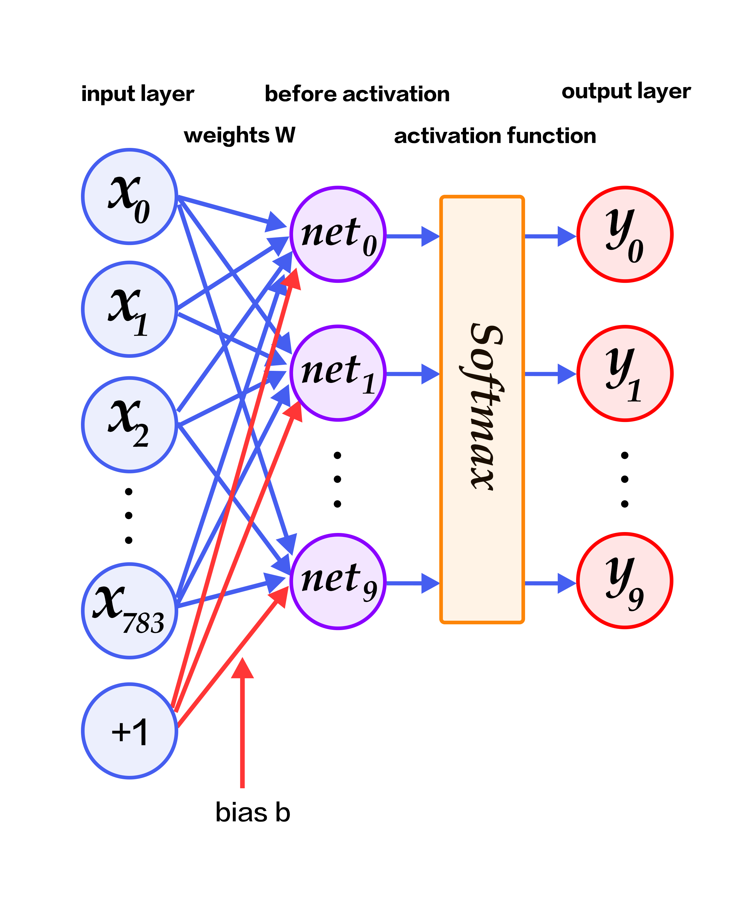
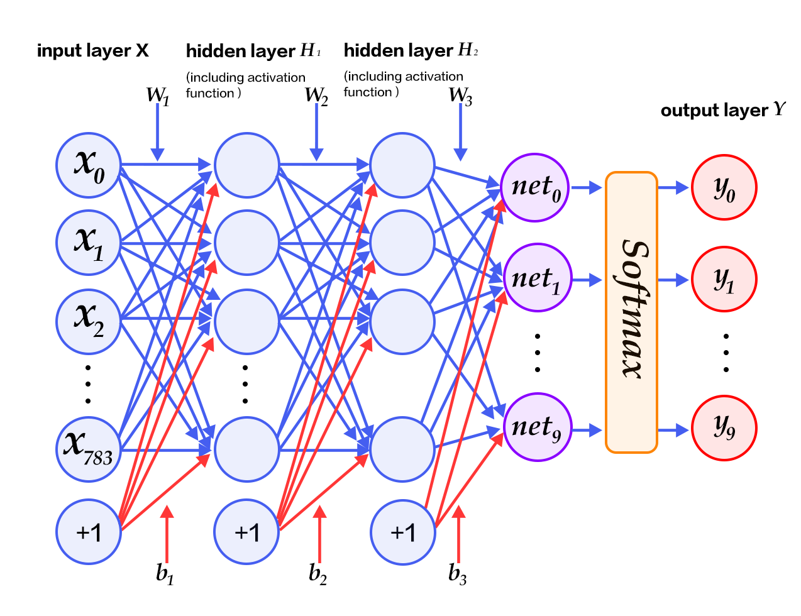
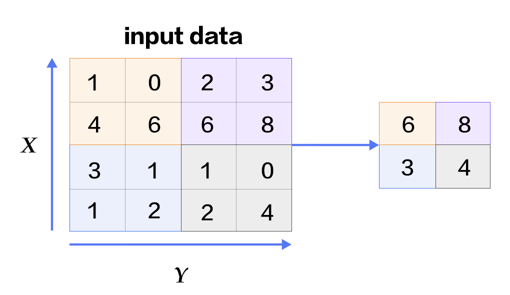
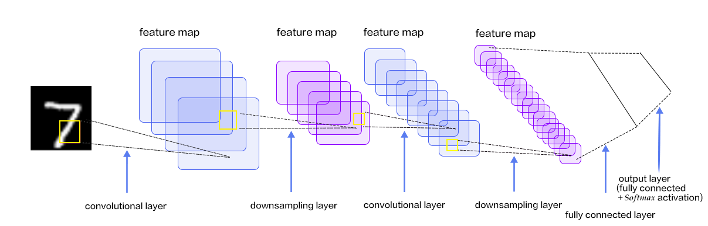

# Recognize Digits
The source code for this tutorial is here: [book/recognize_digits](https://github.com/PaddlePaddle/book/tree/develop/02.recognize_digits). For instructions on getting started with Paddle, please refer to [installation instructions](https://github.com/PaddlePaddle/book/blob/develop/README.md#running-the-book).
## Introduction
When one learns to program, the first task is usually to write a program that prints "Hello World!". In Machine Learning or Deep Learning, an equivalent task is to train a model to recognize hand-written digits using the [MNIST](http://yann.lecun.com/exdb/mnist/) dataset. Handwriting recognition is a classic image classification problem. The problem is relatively easy and MNIST is a complete dataset. As a simple Computer Vision dataset, MNIST contains images of handwritten digits and their corresponding labels (Fig. 1). The input image is a $28\times28$ matrix, and the label is one of the digits from $0$ to $9$. All images are normalized, meaning that they are both rescaled and centered.

Fig. 1. Examples of MNIST images
The MNIST dataset is from the [NIST](https://www.nist.gov/srd/nist-special-database-19) Special Database 3 (SD-3) and the Special Database 1 (SD-1). The SD-3 is labeled by the staff of the U.S. Census Bureau, while SD-1 is labeled by high school students. Therefore the SD-3 is cleaner and easier to recognize than the SD-1 dataset. Yann LeCun et al. used half of the samples from each of SD-1 and SD-3 to create the MNIST training set of 60,000 samples and test set of 10,000 samples. 250 annotators labeled the training set, thus guaranteed that there wasn't a complete overlap of annotators of training set and test set.
The MNIST dataset has been used for evaluating many image recognition algorithms such as a single layer linear classifier, Multilayer Perceptron (MLP) and Multilayer CNN LeNet\[[1](#references)\], K-Nearest Neighbors (k-NN) \[[2](#references)\], Support Vector Machine (SVM) \[[3](#references)\], Neural Networks \[[4-7](#references)\], Boosting \[[8](#references)\] and preprocessing methods like distortion removal, noise removal, and blurring. Among these algorithms, the *Convolutional Neural Network* (CNN) has achieved a series of impressive results in Image Classification tasks, including VGGNet, GoogLeNet, and ResNet (See [Image Classification](https://github.com/PaddlePaddle/book/tree/develop/03.image_classification) tutorial).
In this tutorial, we start with a simple **softmax** regression model and go on with MLP and CNN. Readers will see how these methods improve the recognition accuracy step-by-step.
## Model Overview
Before introducing classification algorithms and training procedure, we define the following symbols:
- $X$ is the input: Input is a $28\times 28$ MNIST image. It is flattened to a $784$ dimensional vector. $X=\left (x_0, x_1, \dots, x_{783} \right )$.
- $Y$ is the output: Output of the classifier is 1 of the 10 classes (digits from 0 to 9). $Y=\left (y_0, y_1, \dots, y_9 \right )$. Each dimension $y_i$ represents the probability that the input image belongs to class $i$.
- $L$ is the ground truth label: $L=\left ( l_0, l_1, \dots, l_9 \right )$. It is also 10 dimensional, but only one entry is $1$ and all others are $0$s.
### Softmax Regression
In a simple softmax regression model, the input is first fed to fully connected layers. Then, a softmax function is applied to output probabilities of multiple output classes\[[9](#references)\].
The input $X$ is multiplied by weights $W$ and then added to the bias $b$ to generate activations.
$$ y_i = \text{softmax}(\sum_j W_{i,j}x_j + b_i) $$
where $ \text{softmax}(x_i) = \frac{e^{x_i}}{\sum_j e^{x_j}} $
For an $N$-class classification problem with $N$ output nodes, Softmax normalizes the resulting $N$ dimensional vector so that each of its entries falls in the range $[0,1]\in {R}$, representing the probability that the sample belongs to a certain class. Here $y_i$ denotes the predicted probability that an image is of digit $i$.
In such a classification problem, we usually use the cross entropy loss function:
$$ \text{crossentropy}(label, y) = -\sum_i label_ilog(y_i) $$
Fig. 2 illustrates a softmax regression network, with the weights in blue, and the bias in red. `+1` indicates that the bias is $1$.

Fig. 2. Softmax regression network architecture
### Multilayer Perceptron
The softmax regression model described above uses the simplest two-layer neural network. That is, it only contains an input layer and an output layer, with limited regression capability. To achieve better recognition results, consider adding several hidden layers\[[10](#references)\] between the input layer and the output layer.
1. After the first hidden layer, we get $ H_1 = \phi(W_1X + b_1) $, where $\phi$ denotes the activation function. Some [common ones](###list-of-common-activation-functions) are sigmoid, tanh and ReLU.
2. After the second hidden layer, we get $ H_2 = \phi(W_2H_1 + b_2) $.
3. Finally, the output layer outputs $Y=\text{softmax}(W_3H_2 + b_3)$, the vector denoting our classification result.
Fig. 3. shows a Multilayer Perceptron network, with the weights in blue, and the bias in red. +1 indicates that the bias is $1$.

Fig. 3. Multilayer Perceptron network architecture
### Convolutional Neural Network
#### Convolutional Layer

Fig. 4. Convolutional layer
The **convolutional layer** is the core of a Convolutional Neural Network. The parameters in this layer are composed of a set of filters, also called kernels. We could visualize the convolution step in the following fashion: Each kernel slides horizontally and vertically till it covers the whole image. At every window, we compute the dot product of the kernel and the input. Then, we add the bias and apply an activation function. The result is a two-dimensional activation map. For example, some kernel may recognize corners, and some may recognize circles. These convolution kernels may respond strongly to the corresponding features.
Fig. 4 illustrates the dynamic programming of a convolutional layer, where depths are flattened for simplicity. The input is $W_1=5$, $H_1=5$, $D_1=3$. In fact, this is a common representation for colored images. $W_1$ and $H_1$ correspond to the width and height in a colored image. $D_1$ corresponds to the three color channels for RGB. The parameters of the convolutional layer are $K=2$, $F=3$, $S=2$, $P=1$. $K$ denotes the number of kernels; specifically, $Filter$ $W_0$ and $Filter$ $W_1$ are the kernels. $F$ is kernel size while $W0$ and $W1$ are both $F\timesF = 3\times3$ matrices in all depths. $S$ is the stride, which is the width of the sliding window; here, kernels move leftwards or downwards by two units each time. $P$ is the width of the padding, which denotes an extension of the input; here, the gray area shows zero padding with size 1.
#### Pooling Layer

Fig. 5 Pooling layer using max-pooling
A **pooling layer** performs downsampling. The main functionality of this layer is to reduce computation by reducing the network parameters. It also prevents over-fitting to some extent. Usually, a pooling layer is added after a convolutional layer. Pooling layer can use various techniques, such as max pooling and average pooling. As shown in Fig.5, max pooling uses rectangles to segment the input layer into several parts and computes the maximum value in each part as the output.
#### LeNet-5 Network

Fig. 6. LeNet-5 Convolutional Neural Network architecture
[**LeNet-5**](http://yann.lecun.com/exdb/lenet/) is one of the simplest Convolutional Neural Networks. Fig. 6. shows its architecture: A 2-dimensional input image is fed into two sets of convolutional layers and pooling layers. This output is then fed to a fully connected layer and a softmax classifier. Compared to multilayer, fully connected perceptrons, the LeNet-5 can recognize images better. This is due to the following three properties of the convolution:
- The 3D nature of the neurons: a convolutional layer is organized by width, height, and depth. Neurons in each layer are connected to only a small region in the previous layer. This region is called the receptive field.
- Local connectivity: A CNN utilizes the local space correlation by connecting local neurons. This design guarantees that the learned filter has a strong response to local input features. Stacking many such layers generates a non-linear filter that is more global. This enables the network to first obtain good representation for small parts of input and then combine them to represent a larger region.
- Weight sharing: In a CNN, computation is iterated on shared parameters (weights and bias) to form a feature map. This means that all the neurons in the same depth of the output response to the same feature. This allows the network to detect a feature regardless of its position in the input.
For more details on Convolutional Neural Networks, please refer to the tutorial on [Image Classification](https://github.com/PaddlePaddle/book/blob/develop/image_classification/README.md) and the [relevant lecture](http://cs231n.github.io/convolutional-networks/) from a Stanford course.
### List of Common Activation Functions
- Sigmoid activation function: $ f(x) = sigmoid(x) = \frac{1}{1+e^{-x}} $
- Tanh activation function: $ f(x) = tanh(x) = \frac{e^x-e^{-x}}{e^x+e^{-x}} $
In fact, tanh function is just a rescaled version of the sigmoid function. It is obtained by magnifying the value of the sigmoid function and moving it downwards by 1.
- ReLU activation function: $ f(x) = max(0, x) $
For more information, please refer to [Activation functions on Wikipedia](https://en.wikipedia.org/wiki/Activation_function).
## Data Preparation
PaddlePaddle provides a Python module, `paddle.dataset.mnist`, which downloads and caches the [MNIST dataset](http://yann.lecun.com/exdb/mnist/). The cache is under `/home/username/.cache/paddle/dataset/mnist`:
| File name | Description | Size |
|----------------------|--------------|-----------|
|train-images-idx3-ubyte| Training images | 60,000 |
|train-labels-idx1-ubyte| Training labels | 60,000 |
|t10k-images-idx3-ubyte | Evaluation images | 10,000 |
|t10k-labels-idx1-ubyte | Evaluation labels | 10,000 |
## Model Configuration
A PaddlePaddle program starts from importing the API package:
```python
import paddle.v2 as paddle
```
We want to use this program to demonstrate three different classifiers, each defined as a Python function:
- Softmax regression: the network has a fully-connection layer with softmax activation:
```python
def softmax_regression(img):
predict = paddle.layer.fc(input=img,
size=10,
act=paddle.activation.Softmax())
return predict
```
- Multi-Layer Perceptron: this network has two hidden fully-connected layers, one with ReLU and the other with softmax activation:
```python
def multilayer_perceptron(img):
hidden1 = paddle.layer.fc(input=img, size=128, act=paddle.activation.Relu())
hidden2 = paddle.layer.fc(input=hidden1,
size=64,
act=paddle.activation.Relu())
predict = paddle.layer.fc(input=hidden2,
size=10,
act=paddle.activation.Softmax())
return predict
```
- Convolution network LeNet-5: the input image is fed through two convolution-pooling layers, a fully-connected layer, and the softmax output layer:
```python
def convolutional_neural_network(img):
conv_pool_1 = paddle.networks.simple_img_conv_pool(
input=img,
filter_size=5,
num_filters=20,
num_channel=1,
pool_size=2,
pool_stride=2,
act=paddle.activation.Relu())
conv_pool_2 = paddle.networks.simple_img_conv_pool(
input=conv_pool_1,
filter_size=5,
num_filters=50,
num_channel=20,
pool_size=2,
pool_stride=2,
act=paddle.activation.Relu())
predict = paddle.layer.fc(input=conv_pool_2,
size=10,
act=paddle.activation.Softmax())
return predict
```
PaddlePaddle provides a special layer `layer.data` for reading data. Let us create a data layer for reading images and connect it to a classification network created using one of above three functions. We also need a cost layer for training the model.
```python
paddle.init(use_gpu=False, trainer_count=1)
images = paddle.layer.data(
name='pixel', type=paddle.data_type.dense_vector(784))
label = paddle.layer.data(
name='label', type=paddle.data_type.integer_value(10))
# predict = softmax_regression(images)
# predict = multilayer_perceptron(images) # uncomment for MLP
predict = convolutional_neural_network(images) # uncomment for LeNet5
cost = paddle.layer.classification_cost(input=predict, label=label)
```
Now, it is time to specify training parameters. In the following `Momentum` optimizer, `momentum=0.9` means that 90% of the current momentum comes from that of the previous iteration. The learning rate relates to the speed at which the network training converges. Regularization is meant to prevent over-fitting; here we use the L2 regularization.
```python
parameters = paddle.parameters.create(cost)
optimizer = paddle.optimizer.Momentum(
learning_rate=0.1 / 128.0,
momentum=0.9,
regularization=paddle.optimizer.L2Regularization(rate=0.0005 * 128))
trainer = paddle.trainer.SGD(cost=cost,
parameters=parameters,
update_equation=optimizer)
```
Then we specify the training data `paddle.dataset.mnist.train()` and testing data `paddle.dataset.mnist.test()`. These two methods are *reader creators*. Once called, a reader creator returns a *reader*. A reader is a Python method, which, once called, returns a Python generator, which yields instances of data.
`shuffle` is a reader decorator. It takes a reader A as input and returns a new reader B. Under the hood, B calls A to read data in the following fashion: it copies in `buffer_size` instances at a time into a buffer, shuffles the data, and yields the shuffled instances one at a time. A large buffer size would yield very shuffled data.
`batch` is a special decorator, which takes a reader and outputs a *batch reader*, which doesn't yield an instance, but a minibatch at a time.
`event_handler_plot` is used to plot a figure like below：

```python
from paddle.v2.plot import Ploter
train_title = "Train cost"
test_title = "Test cost"
cost_ploter = Ploter(train_title, test_title)
step = 0
# event_handler to plot a figure
def event_handler_plot(event):
global step
if isinstance(event, paddle.event.EndIteration):
if step % 100 == 0:
cost_ploter.append(train_title, step, event.cost)
cost_ploter.plot()
step += 1
if isinstance(event, paddle.event.EndPass):
# save parameters
with open('params_pass_%d.tar' % event.pass_id, 'w') as f:
trainer.save_parameter_to_tar(f)
result = trainer.test(reader=paddle.batch(
paddle.dataset.mnist.test(), batch_size=128))
cost_ploter.append(test_title, step, result.cost)
```
`event_handler` is used to plot some text data when training.
```python
lists = []
# event handler to print the progress
def event_handler(event):
if isinstance(event, paddle.event.EndIteration):
if event.batch_id % 100 == 0:
print "Pass %d, Batch %d, Cost %f, %s" % (
event.pass_id, event.batch_id, event.cost, event.metrics)
if isinstance(event, paddle.event.EndPass):
# save parameters
with open('params_pass_%d.tar' % event.pass_id, 'w') as f:
trainer.save_parameter_to_tar(f)
result = trainer.test(reader=paddle.batch(
paddle.dataset.mnist.test(), batch_size=128))
print "Test with Pass %d, Cost %f, %s\n" % (
event.pass_id, result.cost, result.metrics)
lists.append((event.pass_id, result.cost,
result.metrics['classification_error_evaluator']))
```
```python
# Train the model now
trainer.train(
reader=paddle.batch(
paddle.reader.shuffle(
paddle.dataset.mnist.train(), buf_size=8192),
batch_size=128),
event_handler=event_handler_plot,
num_passes=5)
```
During training, `trainer.train` invokes `event_handler` for certain events. This gives us a chance to print the training progress.
```
# Pass 0, Batch 0, Cost 2.780790, {'classification_error_evaluator': 0.9453125}
# Pass 0, Batch 100, Cost 0.635356, {'classification_error_evaluator': 0.2109375}
# Pass 0, Batch 200, Cost 0.326094, {'classification_error_evaluator': 0.1328125}
# Pass 0, Batch 300, Cost 0.361920, {'classification_error_evaluator': 0.1015625}
# Pass 0, Batch 400, Cost 0.410101, {'classification_error_evaluator': 0.125}
# Test with Pass 0, Cost 0.326659, {'classification_error_evaluator': 0.09470000118017197}
```
After the training, we can check the model's prediction accuracy.
```
# find the best pass
best = sorted(lists, key=lambda list: float(list[1]))[0]
print 'Best pass is %s, testing Avgcost is %s' % (best[0], best[1])
print 'The classification accuracy is %.2f%%' % (100 - float(best[2]) * 100)
```
Usually, with MNIST data, the softmax regression model achieves an accuracy around 92.34%, the MLP 97.66%, and the convolution network around 99.20%. Convolution layers have been widely considered a great invention for image processing.
## Application
After training, users can use the trained model to classify images. The following code shows how to inference MNIST images through `paddle.infer` interface.
```python
from PIL import Image
import numpy as np
import os
def load_image(file):
im = Image.open(file).convert('L')
im = im.resize((28, 28), Image.ANTIALIAS)
im = np.array(im).astype(np.float32).flatten()
im = im / 255.0 * 2.0 - 1.0
return im
test_data = []
cur_dir = os.getcwd()
test_data.append((load_image(cur_dir + '/image/infer_3.png'),))
probs = paddle.infer(
output_layer=predict, parameters=parameters, input=test_data)
lab = np.argsort(-probs) # probs and lab are the results of one batch data
print "Label of image/infer_3.png is: %d" % lab[0][0]
```
## Conclusion
This tutorial describes a few common deep learning models using **Softmax regression**, **Multilayer Perceptron Network**, and **Convolutional Neural Network**. Understanding these models is crucial for future learning; the subsequent tutorials derive more sophisticated networks by building on top of them.
When our model evolves from a simple softmax regression to a slightly complex Convolutional Neural Network, the recognition accuracy on the MNIST dataset achieves a large improvement. This is due to the Convolutional layers' local connections and parameter sharing. While learning new models in the future, we encourage the readers to understand the key ideas that lead a new model to improve the results of an old one.
Moreover, this tutorial introduces the basic flow of PaddlePaddle model design, which starts with a *data provider*, a model layer construction, and finally training and prediction. Motivated readers can leverage the flow used in this MNIST handwritten digit classification example and experiment with different data and network architectures to train models for classification tasks of their choice.
## References
1. LeCun, Yann, Léon Bottou, Yoshua Bengio, and Patrick Haffner. ["Gradient-based learning applied to document recognition."](http://ieeexplore.ieee.org/abstract/document/726791/) Proceedings of the IEEE 86, no. 11 (1998): 2278-2324.
2. Wejéus, Samuel. ["A Neural Network Approach to Arbitrary SymbolRecognition on Modern Smartphones."](http://www.diva-portal.org/smash/record.jsf?pid=diva2:753279&dswid=-434) (2014).
3. Decoste, Dennis, and Bernhard Schölkopf. ["Training invariant support vector machines."](http://link.springer.com/article/10.1023/A:1012454411458) Machine learning 46, no. 1-3 (2002): 161-190.
4. Simard, Patrice Y., David Steinkraus, and John C. Platt. ["Best Practices for Convolutional Neural Networks Applied to Visual Document Analysis."](http://citeseerx.ist.psu.edu/viewdoc/download?doi=10.1.1.160.8494&rep=rep1&type=pdf) In ICDAR, vol. 3, pp. 958-962. 2003.
5. Salakhutdinov, Ruslan, and Geoffrey E. Hinton. ["Learning a Nonlinear Embedding by Preserving Class Neighbourhood Structure."](http://www.jmlr.org/proceedings/papers/v2/salakhutdinov07a/salakhutdinov07a.pdf) In AISTATS, vol. 11. 2007.
6. Cireşan, Dan Claudiu, Ueli Meier, Luca Maria Gambardella, and Jürgen Schmidhuber. ["Deep, big, simple neural nets for handwritten digit recognition."](http://www.mitpressjournals.org/doi/abs/10.1162/NECO_a_00052) Neural computation 22, no. 12 (2010): 3207-3220.
7. Deng, Li, Michael L. Seltzer, Dong Yu, Alex Acero, Abdel-rahman Mohamed, and Geoffrey E. Hinton. ["Binary coding of speech spectrograms using a deep auto-encoder."](http://citeseerx.ist.psu.edu/viewdoc/download?doi=10.1.1.185.1908&rep=rep1&type=pdf) In Interspeech, pp. 1692-1695. 2010.
8. Kégl, Balázs, and Róbert Busa-Fekete. ["Boosting products of base classifiers."](http://dl.acm.org/citation.cfm?id=1553439) In Proceedings of the 26th Annual International Conference on Machine Learning, pp. 497-504. ACM, 2009.
9. Rosenblatt, Frank. ["The perceptron: A probabilistic model for information storage and organization in the brain."](http://psycnet.apa.org/journals/rev/65/6/386/) Psychological review 65, no. 6 (1958): 386.
10. Bishop, Christopher M. ["Pattern recognition."](http://users.isr.ist.utl.pt/~wurmd/Livros/school/Bishop%20-%20Pattern%20Recognition%20And%20Machine%20Learning%20-%20Springer%20%202006.pdf) Machine Learning 128 (2006): 1-58.
This tutorial is contributed by
PaddlePaddle, and licensed under a
Creative Commons Attribution-ShareAlike 4.0 International License.